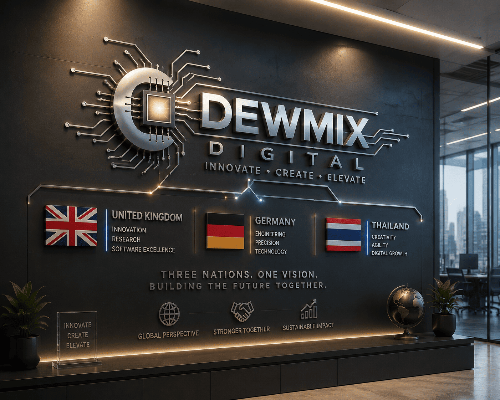

Websites, apps, and content
Premium pages, landing journeys, booking or quote flows, local search basics, social assets, flyers, video, animation, and sound.
Germany-backed full IT solutions
DEWMIX Digital helps businesses replace scattered vendors, unreliable tech, weak online presence, and manual admin with a secure, polished digital operation.
The messy middle
Most businesses do not have one problem. They have a chain reaction: the website is weak, accounts are scattered, staff share information in chats, backups are unclear, and nobody owns the full picture.
Capabilities
Each capability has a job in the story: attract customers, run the business, protect the operation, reduce manual work, and keep improving after launch.
Premium pages, landing journeys, booking or quote flows, local search basics, social assets, flyers, video, animation, and sound.
Devices, domains, email, cloud storage, network setup, access cleanup, documentation, handover notes, and supplier consolidation.
Customer-service assistants, FAQ flows, lead routing, reminders, staff workflows, internal knowledge, and controlled human handover.
Risk cleanup, permissions, backup planning, monitoring visibility, maintenance routines, escalation paths, and ongoing improvements.
Technology ecosystem
DEWMIX uses the technology map as a planning tool, not decoration. It shows how every customer touchpoint connects to the infrastructure behind it and the support process that keeps it dependable.
Directed delivery
DEWMIX avoids the usual supplier handoff by making discovery, build, launch, and support part of one managed journey.
We identify what is costing time, trust, sales, or operational confidence.
We separate urgent fixes from nice-to-have ideas so progress starts without creating new risk.
We design and configure the website, IT, automation, content, and protection pieces that belong together.
We leave the business with cleaner ownership, clearer access, practical notes, and fewer mysteries.
We keep the system visible, maintained, and ready for the next improvement.
Real-world scenarios

DEWMIX builds the launch website, menu or booking journey, Google-ready basics, staff email, Wi-Fi/network setup, opening content, and a support handover.
We clean domains, accounts, access, files, backups, outdated pages, supplier confusion, and documentation so the business can move forward safely.
We map enquiries, FAQs, follow-ups, internal reminders, lead routing, and human handover so automation improves service instead of creating noise.
Why it works
DEWMIX Digital is built for owners and teams who want a dependable online presence and a calmer technology base without managing a long list of separate suppliers. We combine brand-aware design, practical IT, secure setup, AI automation, media production, and ongoing support into one accountable service.
Contact
Share the part of the operation that feels weak, messy, outdated, or risky. DEWMIX can help scope a focused first step without asking for private credentials through this form.